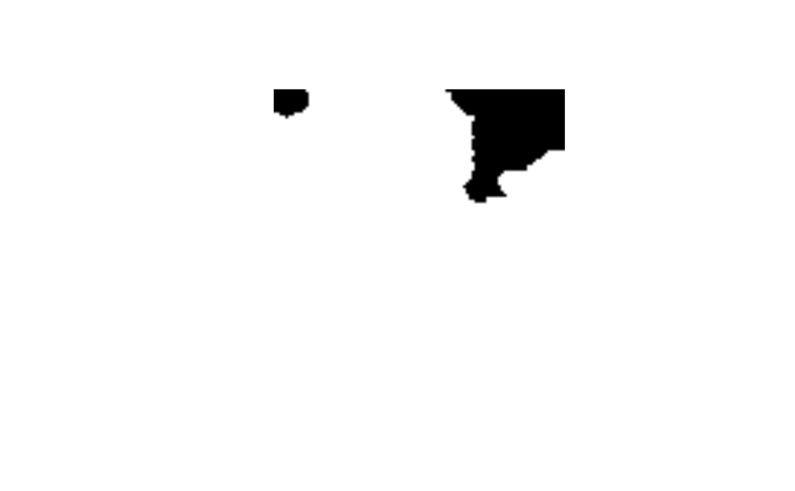
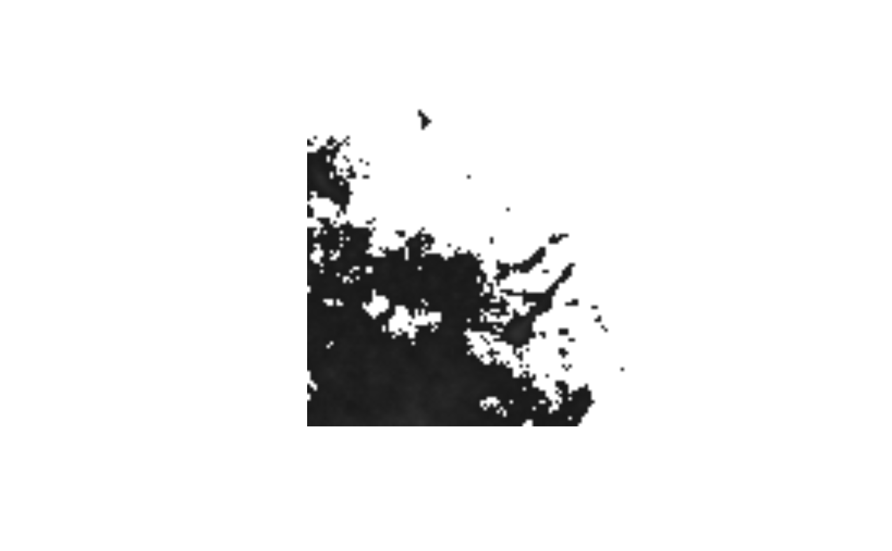

<!-- Generated by pkgdown: do not edit by hand -->
<!DOCTYPE html>
<html lang="en">
  <head>
  <meta charset="utf-8">
<meta http-equiv="X-UA-Compatible" content="IE=edge">
<meta name="viewport" content="width=device-width, initial-scale=1.0">

<title>Automatically threshold an array of non-negative integers. — auto_thresh • autothresholdr</title>

<!-- favicons -->
<link rel="icon" type="image/png" sizes="16x16" href="../favicon-16x16.png">
<link rel="icon" type="image/png" sizes="32x32" href="../favicon-32x32.png">
<link rel="apple-touch-icon" type="image/png" sizes="180x180" href="../apple-touch-icon.png" />
<link rel="apple-touch-icon" type="image/png" sizes="120x120" href="../apple-touch-icon-120x120.png" />
<link rel="apple-touch-icon" type="image/png" sizes="76x76" href="../apple-touch-icon-76x76.png" />
<link rel="apple-touch-icon" type="image/png" sizes="60x60" href="../apple-touch-icon-60x60.png" />

<!-- jquery -->
<script src="https://cdnjs.cloudflare.com/ajax/libs/jquery/3.4.1/jquery.min.js" integrity="sha256-CSXorXvZcTkaix6Yvo6HppcZGetbYMGWSFlBw8HfCJo=" crossorigin="anonymous"></script>
<!-- Bootstrap -->
<link href="https://cdnjs.cloudflare.com/ajax/libs/bootswatch/3.4.0/cerulean/bootstrap.min.css" rel="stylesheet" crossorigin="anonymous" />


<script src="https://cdnjs.cloudflare.com/ajax/libs/twitter-bootstrap/3.4.1/js/bootstrap.min.js" integrity="sha256-nuL8/2cJ5NDSSwnKD8VqreErSWHtnEP9E7AySL+1ev4=" crossorigin="anonymous"></script>

<!-- bootstrap-toc -->
<link rel="stylesheet" href="../bootstrap-toc.css">
<script src="../bootstrap-toc.js"></script>

<!-- Font Awesome icons -->
<link rel="stylesheet" href="https://cdnjs.cloudflare.com/ajax/libs/font-awesome/5.12.1/css/all.min.css" integrity="sha256-mmgLkCYLUQbXn0B1SRqzHar6dCnv9oZFPEC1g1cwlkk=" crossorigin="anonymous" />
<link rel="stylesheet" href="https://cdnjs.cloudflare.com/ajax/libs/font-awesome/5.12.1/css/v4-shims.min.css" integrity="sha256-wZjR52fzng1pJHwx4aV2AO3yyTOXrcDW7jBpJtTwVxw=" crossorigin="anonymous" />

<!-- clipboard.js -->
<script src="https://cdnjs.cloudflare.com/ajax/libs/clipboard.js/2.0.6/clipboard.min.js" integrity="sha256-inc5kl9MA1hkeYUt+EC3BhlIgyp/2jDIyBLS6k3UxPI=" crossorigin="anonymous"></script>

<!-- headroom.js -->
<script src="https://cdnjs.cloudflare.com/ajax/libs/headroom/0.11.0/headroom.min.js" integrity="sha256-AsUX4SJE1+yuDu5+mAVzJbuYNPHj/WroHuZ8Ir/CkE0=" crossorigin="anonymous"></script>
<script src="https://cdnjs.cloudflare.com/ajax/libs/headroom/0.11.0/jQuery.headroom.min.js" integrity="sha256-ZX/yNShbjqsohH1k95liqY9Gd8uOiE1S4vZc+9KQ1K4=" crossorigin="anonymous"></script>

<!-- pkgdown -->
<link href="../pkgdown.css" rel="stylesheet">
<script src="../pkgdown.js"></script>


<meta property="og:title" content="Automatically threshold an array of non-negative integers. — auto_thresh" />
<meta property="og:description" content="These functions apply the ImageJ &quot;Auto Threshold&quot; plugin's image thresholding
methods. The available methods are &quot;IJDefault&quot;, &quot;Huang&quot;, &quot;Huang2&quot;,
&quot;Intermodes&quot;, &quot;IsoData&quot;, &quot;Li&quot;, &quot;MaxEntropy&quot;, &quot;Mean&quot;, &quot;MinErrorI&quot;, &quot;Minimum&quot;,
&quot;Moments&quot;, &quot;Otsu&quot;, &quot;Percentile&quot;, &quot;RenyiEntropy&quot;, &quot;Shanbhag&quot;, &quot;Triangle&quot; and
&quot;Yen&quot;. Read about them at https://imagej.net/Auto_Threshold." />
<meta property="og:image" content="/logo.png" />


<!-- mathjax -->
<script src="https://cdnjs.cloudflare.com/ajax/libs/mathjax/2.7.5/MathJax.js" integrity="sha256-nvJJv9wWKEm88qvoQl9ekL2J+k/RWIsaSScxxlsrv8k=" crossorigin="anonymous"></script>
<script src="https://cdnjs.cloudflare.com/ajax/libs/mathjax/2.7.5/config/TeX-AMS-MML_HTMLorMML.js" integrity="sha256-84DKXVJXs0/F8OTMzX4UR909+jtl4G7SPypPavF+GfA=" crossorigin="anonymous"></script>

<!--[if lt IE 9]>
<script src="https://oss.maxcdn.com/html5shiv/3.7.3/html5shiv.min.js"></script>
<script src="https://oss.maxcdn.com/respond/1.4.2/respond.min.js"></script>
<![endif]-->


  </head>

  <body data-spy="scroll" data-target="#toc">
    <div class="container template-reference-topic">
      <header>
      <div class="navbar navbar-default navbar-fixed-top" role="navigation">
  <div class="container">
    <div class="navbar-header">
      <button type="button" class="navbar-toggle collapsed" data-toggle="collapse" data-target="#navbar" aria-expanded="false">
        <span class="sr-only">Toggle navigation</span>
        <span class="icon-bar"></span>
        <span class="icon-bar"></span>
        <span class="icon-bar"></span>
      </button>
      <span class="navbar-brand">
        <a class="navbar-link" href="../index.html">autothresholdr</a>
        <span class="version label label-default" data-toggle="tooltip" data-placement="bottom" title="Released version">1.3.12</span>
      </span>
    </div>

    <div id="navbar" class="navbar-collapse collapse">
      <ul class="nav navbar-nav">
        <li>
  <a href="../index.html">
    <span class="fas fa-home fa-lg"></span>
     
  </a>
</li>
<li>
  <a href="../reference/index.html">Reference</a>
</li>
<li class="dropdown">
  <a href="#" class="dropdown-toggle" data-toggle="dropdown" role="button" aria-expanded="false">
    Articles
     
    <span class="caret"></span>
  </a>
  <ul class="dropdown-menu" role="menu">
    <li>
      <a href="../articles/finding-thresholds.html">Finding Thresholds</a>
    </li>
    <li>
      <a href="../articles/thresholding-image-stacks.html">Thresholding Image Stacks</a>
    </li>
    <li>
      <a href="../articles/thresholding-images.html">Thresholding Images</a>
    </li>
  </ul>
</li>
<li>
  <a href="../news/index.html">Changelog</a>
</li>
      </ul>
      <ul class="nav navbar-nav navbar-right">
        <li>
  <a href="https://github.com/rorynolan/autothresholdr/">
    <span class="fab fa-github fa-lg"></span>
     
  </a>
</li>
      </ul>
      
    </div><!--/.nav-collapse -->
  </div><!--/.container -->
</div><!--/.navbar -->

      

      </header>

<div class="row">
  <div class="col-md-9 contents">
    <div class="page-header">
    <h1>Automatically threshold an array of non-negative integers.</h1>
    <small class="dont-index">Source: <a href='https://github.com/rorynolan/autothresholdr/blob/master/R/thresh.R'><code>R/thresh.R</code></a></small>
    <div class="hidden name"><code>auto_thresh.Rd</code></div>
    </div>

    <div class="ref-description">
    <p>These functions apply the ImageJ "Auto Threshold" plugin's image thresholding
methods. The available methods are "IJDefault", "Huang", "Huang2",
"Intermodes", "IsoData", "Li", "MaxEntropy", "Mean", "MinErrorI", "Minimum",
"Moments", "Otsu", "Percentile", "RenyiEntropy", "Shanbhag", "Triangle" and
"Yen". Read about them at <a href='https://imagej.net/Auto_Threshold'>https://imagej.net/Auto_Threshold</a>.</p>
    </div>

    <pre class="usage"><span class='fu'>auto_thresh</span><span class='op'>(</span>
  <span class='va'>int_arr</span>,
  <span class='va'>method</span>,
  ignore_black <span class='op'>=</span> <span class='cn'>FALSE</span>,
  ignore_white <span class='op'>=</span> <span class='cn'>FALSE</span>,
  ignore_na <span class='op'>=</span> <span class='cn'>FALSE</span>
<span class='op'>)</span>

<span class='fu'>auto_thresh_mask</span><span class='op'>(</span>
  <span class='va'>int_arr</span>,
  <span class='va'>method</span>,
  ignore_black <span class='op'>=</span> <span class='cn'>FALSE</span>,
  ignore_white <span class='op'>=</span> <span class='cn'>FALSE</span>,
  ignore_na <span class='op'>=</span> <span class='cn'>FALSE</span>
<span class='op'>)</span>

<span class='fu'>auto_thresh_apply_mask</span><span class='op'>(</span>
  <span class='va'>int_arr</span>,
  <span class='va'>method</span>,
  fail <span class='op'>=</span> <span class='cn'>NA</span>,
  ignore_black <span class='op'>=</span> <span class='cn'>FALSE</span>,
  ignore_white <span class='op'>=</span> <span class='cn'>FALSE</span>,
  ignore_na <span class='op'>=</span> <span class='cn'>FALSE</span>
<span class='op'>)</span>

<span class='fu'>mask</span><span class='op'>(</span>
  <span class='va'>int_arr</span>,
  <span class='va'>method</span>,
  ignore_black <span class='op'>=</span> <span class='cn'>FALSE</span>,
  ignore_white <span class='op'>=</span> <span class='cn'>FALSE</span>,
  ignore_na <span class='op'>=</span> <span class='cn'>FALSE</span>
<span class='op'>)</span>

<span class='fu'>apply_mask</span><span class='op'>(</span>
  <span class='va'>int_arr</span>,
  <span class='va'>method</span>,
  fail <span class='op'>=</span> <span class='cn'>NA</span>,
  ignore_black <span class='op'>=</span> <span class='cn'>FALSE</span>,
  ignore_white <span class='op'>=</span> <span class='cn'>FALSE</span>,
  ignore_na <span class='op'>=</span> <span class='cn'>FALSE</span>
<span class='op'>)</span></pre>

    <h2 class="hasAnchor" id="arguments"><a class="anchor" href="#arguments"></a>Arguments</h2>
    <table class="ref-arguments">
    <colgroup><col class="name" /><col class="desc" /></colgroup>
    <tr>
      <th>int_arr</th>
      <td><p>An array (or vector) of non-negative <em>integers</em>.</p></td>
    </tr>
    <tr>
      <th>method</th>
      <td><p>The name of the thresholding method you wish to use. The
available methods are <code>"IJDefault"</code>, <code>"Huang"</code>, <code>"Huang2"</code>, <code>"Intermodes"</code>,
<code>"IsoData"</code>, <code>"Li"</code>, <code>"MaxEntropy"</code>, <code>"Mean"</code>, <code>"MinErrorI"</code>, <code>"Minimum"</code>,
<code>"Moments"</code>, <code>"Otsu"</code>, <code>"Percentile"</code>, <code>"RenyiEntropy"</code>, <code>"Shanbhag"</code>,
<code>"Triangle"</code> and <code>"Yen"</code>. Partial matching is performed i.e. <code>method = "h"</code>
is enough to get you <code>"Huang"</code> and <code>method = "in"</code> is enough to get you
<code>"Intermodes"</code>. To perform <em>manual</em> thresholding (where you set the
threshold yourself), supply the threshold here as a number e.g. <code>method = 3</code>; so note that this would <em>not</em> select the third method in the above
list of methods.</p></td>
    </tr>
    <tr>
      <th>ignore_black</th>
      <td><p>Ignore black pixels/elements (zeros) when performing the
thresholding?</p></td>
    </tr>
    <tr>
      <th>ignore_white</th>
      <td><p>Ignore white pixels when performing the thresholding? If
set to <code>TRUE</code>, the function makes a good guess as to what the white
(saturated) value would be (see 'Details'). If this is set to a number, all
pixels with value greater than or equal to that number are ignored.</p></td>
    </tr>
    <tr>
      <th>ignore_na</th>
      <td><p>This should be <code>TRUE</code> if <code>NA</code>s in <code>int_arr</code> should be
ignored or <code>FALSE</code> if you want the presence of <code>NA</code>s in <code>int_arr</code> to throw
an error.</p></td>
    </tr>
    <tr>
      <th>fail</th>
      <td><p>When using <code>auto_thresh_apply_mask()</code>, to what value do you wish
to set the pixels which fail to exceed the threshold? <code>fail = 'saturate'</code>
sets them to saturated value (see "Details"). <code>fail = 'zero'</code> sets them to
zero. You can also specify directly here a natural number (must be between
<code>0</code> and <code>2^16 - 1</code>) to use.</p></td>
    </tr>
    </table>

    <h2 class="hasAnchor" id="value"><a class="anchor" href="#value"></a>Value</h2>

    <p><code>auto_thresh()</code> returns an object of class <a href='th.html'>th</a> containing the
threshold value. Pixels exceeding this threshold pass the thresholding,
pixels at or below this level fail.</p>
<p><code>auto_thresh_mask()</code> returns an object of class <a href='masked_arr.html'>masked_arr</a> which is a
binarized version of the input, with a value of <code>TRUE</code> at points which
exceed the threshold and <code>FALSE</code> at those which do not.</p>
<p><code>auto_thresh_apply_mask()</code> returns and object of class <a href='threshed_arr.html'>threshed_arr</a> which
is the original input masked by the threshold, i.e. all points not
exceeding the threshold are set to a user-defined value (default <code>NA</code>).</p>
<p><code>mask()</code> is the same as <code>auto_thresh_mask()</code> and <code>apply_mask()</code> is the same
as <code>auto_thresh_apply_mask()</code>.</p>
    <h2 class="hasAnchor" id="details"><a class="anchor" href="#details"></a>Details</h2>

    
<ul>
<li><p>For <code>ignore_white = TRUE</code>, if the maximum value in the array is one of
<code>2^8-1</code>, <code>2^12-1</code>, <code>2^16-1</code> or <code>2^32-1</code>, then those max values are ignored.
That's because they're the white values in 8, 12, 16 and 32-bit images
respectively (and these are the common image bit sizes to work with). This
guesswork has to be done because <code>R</code> does not know how many bits the image
was on disk. This guess is very unlikely to be wrong, and if it is, the
consequences are negligible anyway. If you're very concerned, then just
specify the white value as an integer in this <code>ignore_white</code> argument.</p></li>
<li><p>If you have set <code>ignore_black = TRUE</code> and/or <code>ignore_white = TRUE</code> but
you are still getting error/warning messages telling you to try them, then
your chosen method is not working for the given array, so you should try a
different method.</p></li>
<li><p>For a given array, if all values are less than <code>2^8</code>, saturated value
is <code>2^8 - 1</code>, otherwise, saturated value is <code>2^16 - 1</code>.</p></li>
</ul>

    <h2 class="hasAnchor" id="acknowledgements"><a class="anchor" href="#acknowledgements"></a>Acknowledgements</h2>

    <p>Gabriel Landini coded all of these functions in
Java. These java functions were then translated to C++.</p>
    <h2 class="hasAnchor" id="references"><a class="anchor" href="#references"></a>References</h2>

    
<ul>
<li><p>Huang, L-K &amp; Wang, M-J J (1995), "Image
thresholding by minimizing the measure of fuzziness", Pattern Recognition
28(1): 41-51</p></li>
<li><p>Prewitt, JMS &amp; Mendelsohn, ML (1966), "The analysis of
cell images", Annals of the New York Academy of Sciences 128: 1035-1053</p></li>
<li><p>Ridler, TW &amp; Calvard, S (1978), "Picture thresholding using an
iterative selection method", IEEE Transactions on Systems, Man and
Cybernetics 8: 630-632</p></li>
<li><p>Li, CH &amp; Lee, CK (1993), "Minimum Cross
Entropy Thresholding", Pattern Recognition 26(4): 617-625</p></li>
<li><p>Li, CH &amp;
Tam, PKS (1998), "An Iterative Algorithm for Minimum Cross Entropy
Thresholding", Pattern Recognition Letters 18(8): 771-776</p></li>
<li><p>Sezgin, M
&amp; Sankur, B (2004), "Survey over Image Thresholding Techniques and
Quantitative Performance Evaluation", Journal of Electronic Imaging 13(1):
146-165</p></li>
<li><p>Kapur, JN; Sahoo, PK &amp; Wong, ACK (1985), "A New Method for
Gray-Level Picture Thresholding Using the Entropy of the Histogram",
Graphical Models and Image Processing 29(3): 273-285</p></li>
<li><p>Glasbey, CA
(1993), "An analysis of histogram-based thresholding algorithms", CVGIP:
Graphical Models and Image Processing 55: 532-537</p></li>
<li><p>Kittler, J &amp;
Illingworth, J (1986), "Minimum error thresholding", Pattern Recognition
19: 41-47</p></li>
<li><p>Prewitt, JMS &amp; Mendelsohn, ML (1966), "The analysis of
cell images", Annals of the New York Academy of Sciences 128: 1035-1053</p></li>
<li><p>Tsai, W (1985), "Moment-preserving thresholding: a new approach",
Computer Vision, Graphics, and Image Processing 29: 377-393</p></li>
<li><p>Otsu, N
(1979), "A threshold selection method from gray-level histograms", IEEE
Trans. Sys., Man., Cyber. 9: 62-66, doi:10.1109/TSMC.1979.4310076</p></li>
<li><p>Doyle, W (1962), "Operation useful for similarity-invariant pattern
recognition", Journal of the Association for Computing Machinery 9:
259-267, doi:10.1145/321119.321123</p></li>
<li><p>Kapur, JN; Sahoo, PK &amp; Wong, ACK
(1985), "A New Method for Gray-Level Picture Thresholding Using the Entropy
of the Histogram", Graphical Models and Image Processing 29(3): 273-285</p></li>
<li><p>Shanbhag, Abhijit G. (1994), "Utilization of information measure as a
means of image thresholding", Graph. Models Image Process. (Academic Press,
Inc.) 56 (5): 414--419, ISSN 1049-9652</p></li>
<li><p>Zack GW, Rogers WE, Latt SA
(1977), "Automatic measurement of sister chromatid exchange frequency", J.
Histochem. Cytochem. 25 (7): 74153, PMID 70454</p></li>
<li><p>Yen JC, Chang FJ,
Chang S (1995), "A New Criterion for Automatic Multilevel Thresholding",
IEEE Trans. on Image Processing 4 (3): 370-378, ISSN 1057-7149,
doi:10.1109/83.366472</p></li>
<li><p>Sezgin, M &amp; Sankur, B (2004), "Survey over
Image Thresholding Techniques and Quantitative Performance Evaluation",
Journal of Electronic Imaging 13(1): 146-165</p></li>
</ul>


    <h2 class="hasAnchor" id="examples"><a class="anchor" href="#examples"></a>Examples</h2>
    <pre class="examples"><span class='r-in'><span class='co'># \donttest{</span></span>
<span class='r-in'><span class='va'>img_location</span> <span class='op'>&lt;-</span> <span class='fu'><a href='https://rdrr.io/r/base/system.file.html'>system.file</a></span><span class='op'>(</span><span class='st'>"extdata"</span>, <span class='st'>"eg.tif"</span>, package <span class='op'>=</span> <span class='st'>"autothresholdr"</span><span class='op'>)</span></span>
<span class='r-in'><span class='va'>img</span> <span class='op'>&lt;-</span> <span class='fu'>ijtiff</span><span class='fu'>::</span><span class='fu'><a href='https://docs.ropensci.org/ijtiff/reference/read_tif.html'>read_tif</a></span><span class='op'>(</span><span class='va'>img_location</span><span class='op'>)</span></span>
<span class='r-msg co'><span class='r-pr'>#&gt;</span> Reading eg.tif: an 8-bit, 100x100 pixel image of unsigned</span>
<span class='r-msg co'><span class='r-pr'>#&gt;</span> integer type. Reading 1 channel and 1 frame . . .</span>
<span class='r-msg co'><span class='r-pr'>#&gt;</span>  Done.</span>
<span class='r-in'><span class='fu'>auto_thresh</span><span class='op'>(</span><span class='va'>img</span>, <span class='st'>"huang"</span><span class='op'>)</span></span>
<span class='r-out co'><span class='r-pr'>#&gt;</span> [1] 5</span>
<span class='r-out co'><span class='r-pr'>#&gt;</span> attr(,"ignore_black")</span>
<span class='r-out co'><span class='r-pr'>#&gt;</span> [1] FALSE</span>
<span class='r-out co'><span class='r-pr'>#&gt;</span> attr(,"ignore_white")</span>
<span class='r-out co'><span class='r-pr'>#&gt;</span> [1] FALSE</span>
<span class='r-out co'><span class='r-pr'>#&gt;</span> attr(,"ignore_na")</span>
<span class='r-out co'><span class='r-pr'>#&gt;</span> [1] FALSE</span>
<span class='r-out co'><span class='r-pr'>#&gt;</span> attr(,"autothresh_method")</span>
<span class='r-out co'><span class='r-pr'>#&gt;</span> [1] "Huang"</span>
<span class='r-out co'><span class='r-pr'>#&gt;</span> attr(,"class")</span>
<span class='r-out co'><span class='r-pr'>#&gt;</span> [1] "th"      "integer"</span>
<span class='r-in'><span class='fu'>auto_thresh</span><span class='op'>(</span><span class='va'>img</span>, <span class='st'>"tri"</span><span class='op'>)</span></span>
<span class='r-out co'><span class='r-pr'>#&gt;</span> [1] 3</span>
<span class='r-out co'><span class='r-pr'>#&gt;</span> attr(,"ignore_black")</span>
<span class='r-out co'><span class='r-pr'>#&gt;</span> [1] FALSE</span>
<span class='r-out co'><span class='r-pr'>#&gt;</span> attr(,"ignore_white")</span>
<span class='r-out co'><span class='r-pr'>#&gt;</span> [1] FALSE</span>
<span class='r-out co'><span class='r-pr'>#&gt;</span> attr(,"ignore_na")</span>
<span class='r-out co'><span class='r-pr'>#&gt;</span> [1] FALSE</span>
<span class='r-out co'><span class='r-pr'>#&gt;</span> attr(,"autothresh_method")</span>
<span class='r-out co'><span class='r-pr'>#&gt;</span> [1] "Triangle"</span>
<span class='r-out co'><span class='r-pr'>#&gt;</span> attr(,"class")</span>
<span class='r-out co'><span class='r-pr'>#&gt;</span> [1] "th"      "integer"</span>
<span class='r-in'><span class='fu'>auto_thresh</span><span class='op'>(</span><span class='va'>img</span>, <span class='st'>"Otsu"</span><span class='op'>)</span></span>
<span class='r-out co'><span class='r-pr'>#&gt;</span> [1] 13</span>
<span class='r-out co'><span class='r-pr'>#&gt;</span> attr(,"ignore_black")</span>
<span class='r-out co'><span class='r-pr'>#&gt;</span> [1] FALSE</span>
<span class='r-out co'><span class='r-pr'>#&gt;</span> attr(,"ignore_white")</span>
<span class='r-out co'><span class='r-pr'>#&gt;</span> [1] FALSE</span>
<span class='r-out co'><span class='r-pr'>#&gt;</span> attr(,"ignore_na")</span>
<span class='r-out co'><span class='r-pr'>#&gt;</span> [1] FALSE</span>
<span class='r-out co'><span class='r-pr'>#&gt;</span> attr(,"autothresh_method")</span>
<span class='r-out co'><span class='r-pr'>#&gt;</span> [1] "Otsu"</span>
<span class='r-out co'><span class='r-pr'>#&gt;</span> attr(,"class")</span>
<span class='r-out co'><span class='r-pr'>#&gt;</span> [1] "th"      "integer"</span>
<span class='r-in'><span class='fu'>auto_thresh</span><span class='op'>(</span><span class='va'>img</span>, <span class='fl'>9</span><span class='op'>)</span></span>
<span class='r-out co'><span class='r-pr'>#&gt;</span> [1] 9</span>
<span class='r-out co'><span class='r-pr'>#&gt;</span> attr(,"ignore_black")</span>
<span class='r-out co'><span class='r-pr'>#&gt;</span> [1] NA</span>
<span class='r-out co'><span class='r-pr'>#&gt;</span> attr(,"ignore_white")</span>
<span class='r-out co'><span class='r-pr'>#&gt;</span> [1] NA</span>
<span class='r-out co'><span class='r-pr'>#&gt;</span> attr(,"ignore_na")</span>
<span class='r-out co'><span class='r-pr'>#&gt;</span> [1] NA</span>
<span class='r-out co'><span class='r-pr'>#&gt;</span> attr(,"autothresh_method")</span>
<span class='r-out co'><span class='r-pr'>#&gt;</span> [1] NA</span>
<span class='r-out co'><span class='r-pr'>#&gt;</span> attr(,"class")</span>
<span class='r-out co'><span class='r-pr'>#&gt;</span> [1] "th"      "numeric"</span>
<span class='r-in'><span class='va'>mask</span> <span class='op'>&lt;-</span> <span class='fu'>auto_thresh_mask</span><span class='op'>(</span><span class='va'>img</span>, <span class='st'>"huang"</span><span class='op'>)</span></span>
<span class='r-in'><span class='fu'>ijtiff</span><span class='fu'>::</span><span class='fu'><a href='https://docs.ropensci.org/ijtiff/reference/display.html'>display</a></span><span class='op'>(</span><span class='va'>mask</span><span class='op'>[</span>, , <span class='fl'>1</span>, <span class='fl'>1</span><span class='op'>]</span><span class='op'>)</span></span>
<span class='r-msg co'><span class='r-pr'>#&gt;</span> Using basic display functionality.</span>
<span class='r-msg co'><span class='r-pr'>#&gt;</span>   * For better display functionality, install the EBImage package.</span>
<span class='r-msg co'><span class='r-pr'>#&gt;</span>   * To install `EBImage`:</span>
<span class='r-msg co'><span class='r-pr'>#&gt;</span>     - Install `BiocManager` with `install.packages("BiocManager")`.</span>
<span class='r-msg co'><span class='r-pr'>#&gt;</span>     - Then run `BiocManager::install("EBImage")`.</span>
<span class='r-plt img'></span>
<span class='r-in'><span class='va'>masked</span> <span class='op'>&lt;-</span> <span class='fu'>auto_thresh_apply_mask</span><span class='op'>(</span><span class='va'>img</span>, <span class='st'>"huang"</span><span class='op'>)</span></span>
<span class='r-in'><span class='fu'>ijtiff</span><span class='fu'>::</span><span class='fu'><a href='https://docs.ropensci.org/ijtiff/reference/display.html'>display</a></span><span class='op'>(</span><span class='va'>masked</span><span class='op'>[</span>, , <span class='fl'>1</span>, <span class='fl'>1</span><span class='op'>]</span><span class='op'>)</span></span>
<span class='r-msg co'><span class='r-pr'>#&gt;</span> Using basic display functionality.</span>
<span class='r-msg co'><span class='r-pr'>#&gt;</span>   * For better display functionality, install the EBImage package.</span>
<span class='r-msg co'><span class='r-pr'>#&gt;</span>   * To install `EBImage`:</span>
<span class='r-msg co'><span class='r-pr'>#&gt;</span>     - Install `BiocManager` with `install.packages("BiocManager")`.</span>
<span class='r-msg co'><span class='r-pr'>#&gt;</span>     - Then run `BiocManager::install("EBImage")`.</span>
<span class='r-plt img'></span>
<span class='r-in'><span class='va'>masked</span> <span class='op'>&lt;-</span> <span class='fu'>auto_thresh_apply_mask</span><span class='op'>(</span><span class='va'>img</span>, <span class='fl'>25</span><span class='op'>)</span></span>
<span class='r-in'><span class='fu'>ijtiff</span><span class='fu'>::</span><span class='fu'><a href='https://docs.ropensci.org/ijtiff/reference/display.html'>display</a></span><span class='op'>(</span><span class='va'>masked</span><span class='op'>[</span>, , <span class='fl'>1</span>, <span class='fl'>1</span><span class='op'>]</span><span class='op'>)</span></span>
<span class='r-msg co'><span class='r-pr'>#&gt;</span> Using basic display functionality.</span>
<span class='r-msg co'><span class='r-pr'>#&gt;</span>   * For better display functionality, install the EBImage package.</span>
<span class='r-msg co'><span class='r-pr'>#&gt;</span>   * To install `EBImage`:</span>
<span class='r-msg co'><span class='r-pr'>#&gt;</span>     - Install `BiocManager` with `install.packages("BiocManager")`.</span>
<span class='r-msg co'><span class='r-pr'>#&gt;</span>     - Then run `BiocManager::install("EBImage")`.</span>
<span class='r-plt img'></span>
<span class='r-in'><span class='co'># }</span></span>
</pre>
  </div>
  <div class="col-md-3 hidden-xs hidden-sm" id="pkgdown-sidebar">
    <nav id="toc" data-toggle="toc" class="sticky-top">
      <h2 data-toc-skip>Contents</h2>
    </nav>
  </div>
</div>


      <footer>
      <div class="copyright">
  <p>Developed by Rory Nolan.</p>
</div>

<div class="pkgdown">
  <p>Site built with <a href="https://pkgdown.r-lib.org/">pkgdown</a> 1.6.1.</p>
</div>

      </footer>
   </div>

  


  </body>
</html>


